UPPER BODY
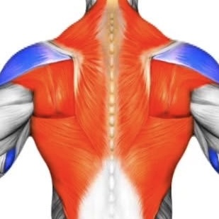
BACK
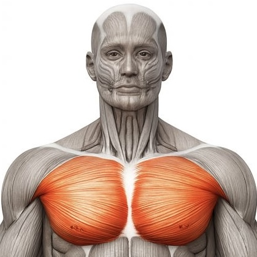
CHEST
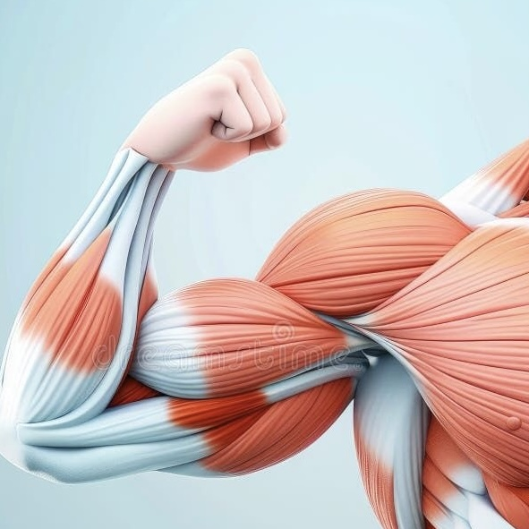
BICEP
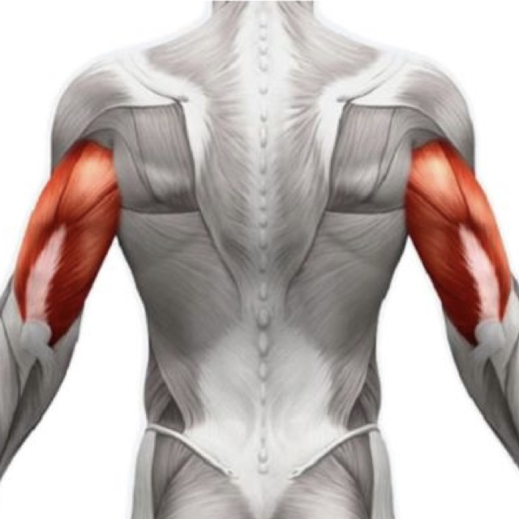
TRICEP
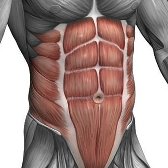
ABS
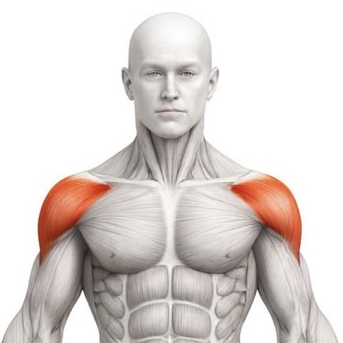
SHOULDER

BACK

CHEST

BICEP

TRICEP

ABS

SHOULDER
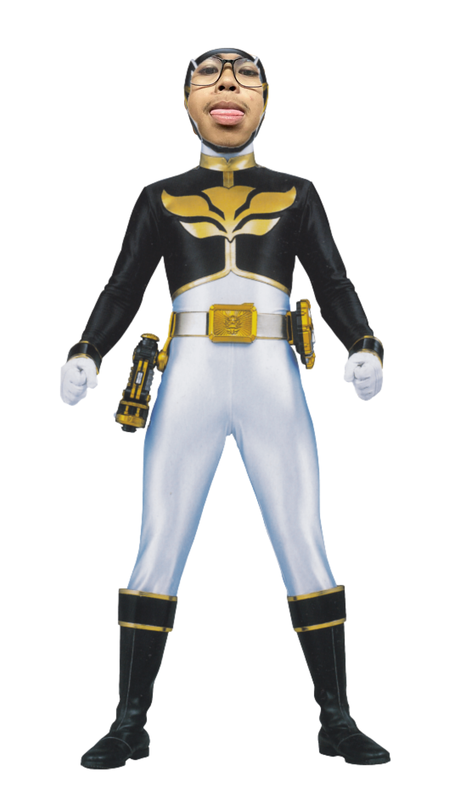
Black Ranger's favorite exercise is the deadlift. This exercise targets the back, glutes, and hamstrings, helping to build posterior chain strength and muscle mass. The deadlift is a compound movement that allows for progressive overload, making it an effective choice for those looking to increase their strength and size.
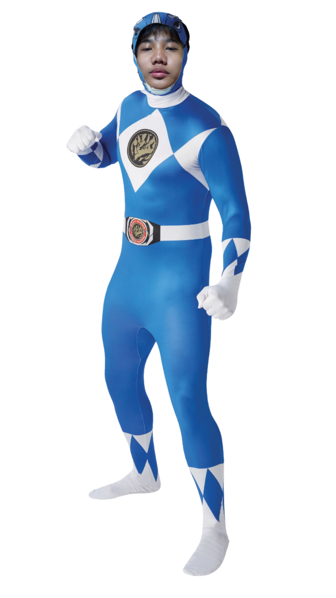
Blue Ranger's favorite exercise is the overhead press. This exercise targets the shoulders and triceps, helping to build upper body strength and muscle mass. The overhead press is a compound movement that allows for progressive overload, making it an effective choice for those looking to increase their strength and size.
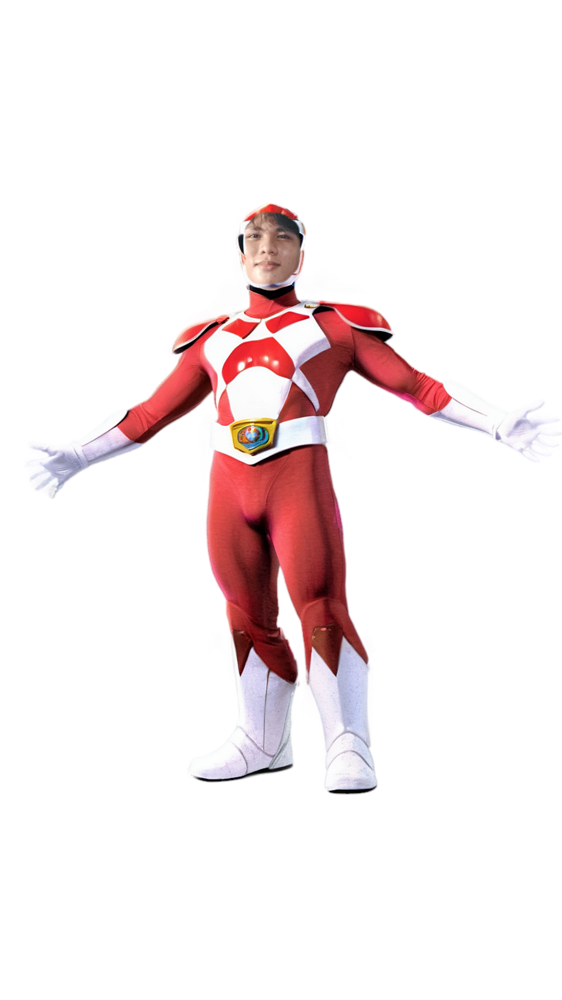
Red Ranger's favorite exercise is the bench press. This exercise targets the chest, shoulders, and triceps, helping to build upper body strength and muscle mass. The bench press is a compound movement that allows for progressive overload, making it an effective choice for those looking to increase their strength and size.
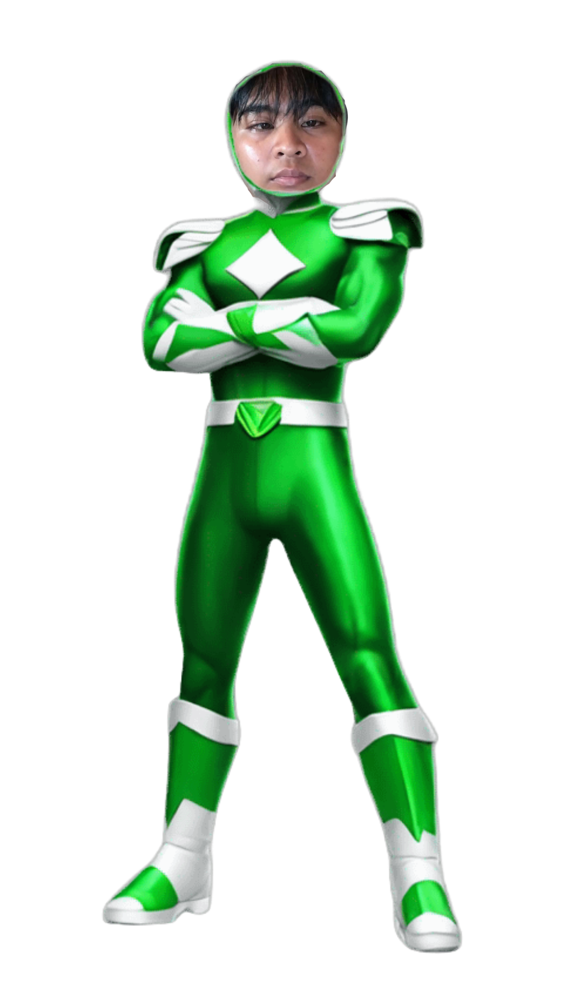
Green Ranger's favorite exercise is the pull-up. This exercise targets the back and biceps, helping to build upper body strength and muscle mass. The pull-up is a compound movement that allows for progressive overload, making it an effective choice for those looking to increase their strength and size.
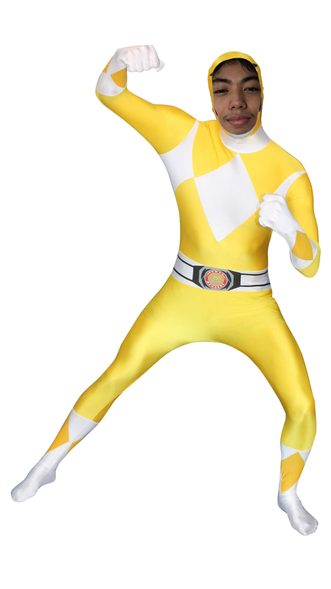
Yellow Ranger's favorite exercise is the squat. This exercise targets the quads, glutes, and hamstrings, helping to build lower body strength and muscle mass. The squat is a compound movement that allows for progressive overload, making it an effective choice for those looking to increase their strength and size.
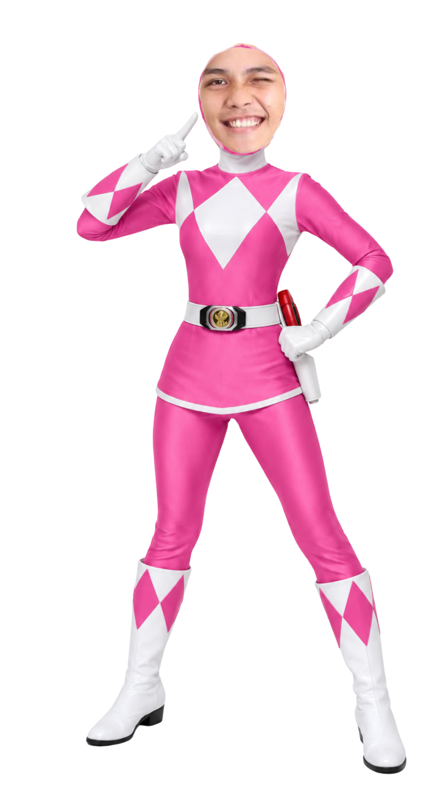
Pink Ranger's favorite exercise is the deadlift. This exercise targets the back, glutes, and hamstrings, helping to build posterior chain strength and muscle mass. The deadlift is a compound movement that allows for progressive overload, making it an effective choice for those looking to increase their strength and size.